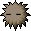

Lv. 33 · #5300001
다크 리티
엘나스의 눈과 먼지에서 태어난 몬스터이다. 탑의 오래된 먼지의 영향으로 까맣게 물들어 버렸다. 엘나스의 차가운 바람에 떠다닐 정도로 가볍고 공기의 흐름을 잘 탄다.
스탯
레벨 33- HP
- 1,100
- MP
- 60
- EXP
- 65
- 넉백 가능 데미지
- 1+
- 물리 데미지
- 120
- 마법 데미지
- 0
- 물리 방어력
- 60
- 마법 방어력
- 80
- 속도
- -40
- 33레벨 에서의 필요 명중
- 54.99
- 메소
- 247.5
- 속성관계
- 성속성약점
- 체경비
- 16.92
- 형태
- 정령형
출현 지역
출현 맵 4개맵 이름을 누르면 메이플노트의 맵 정보가 열립니다.
드롭 테이블
전체 24개| 아이템 | 아이템 ID | 드롭 확률 |
|---|---|---|
| 다크 리티의 털뭉치 | 4000087 | 40% |
| 눈송이 결정 | 4031311 | 20% |
| 하얀 포션 | 2000002 | 1.5% |
| 파란 포션 | 2000003 | 1.5% |
| 해독제 | 2050000 | 0.8% |
| 청동의 원석 | 4010000 | 0.3% |
| 오팔의 원석 | 4020004 | 0.2% |
| 지혜의 크리스탈 원석 | 4004001 | 0.08% |
| 소환의 돌 | 4006001 | 0.08% |
| 마법의 가루(노랑) | 4007004 | 0.03% |
| 마법의 가루(파랑) | 4007002 | 0.03% |
| 석궁 제작의 촉진제 | 4130013 | 0.01% |
| 다크 데빌즈 로브 | 1050029 | 0.01% |
| 왕푸 | 1402002 | 0.01% |
| 다크 가이즈 | 1002175 | 0.01% |
| 블루 폴레패더햇 | 1002138 | 0.008% |
| 그린 라인부츠 | 1072105 | 0.008% |
| 게파트 | 1332014 | 0.008% |
| 다크 레골리스 | 1041068 | 0.007% |
| 다크 레골리스 바지 | 1061063 | 0.007% |
| 다크 브리건 | 1082036 | 0.007% |
| 퍼플 문라이트 | 1051023 | 0.006% |
| 상의 방어력 주문서 10% | 2040402 | 0.004% |
| 블루 데네마린 | 1002625 | 0.0013% |
조건에 맞는 드롭 아이템이 없습니다.
확률은 메이플노트에 게시된 값입니다. 아이템 이름을 누르면 원본 아이템 정보가 열립니다. 과거 버전 데이터이므로 실제 메이플랜드와 다를 수 있습니다.